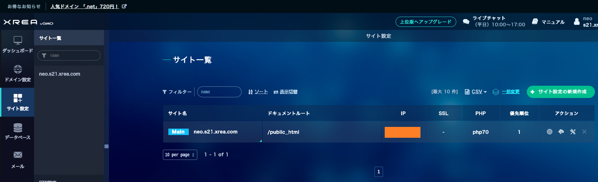
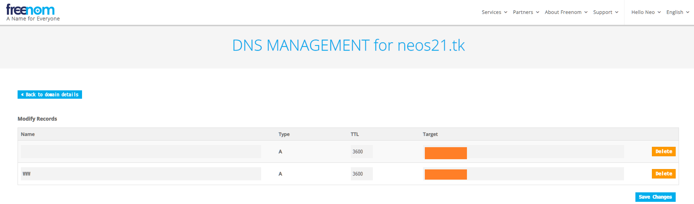
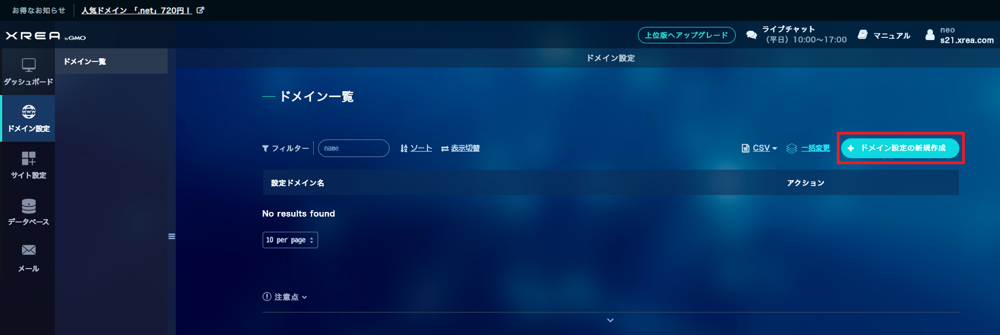
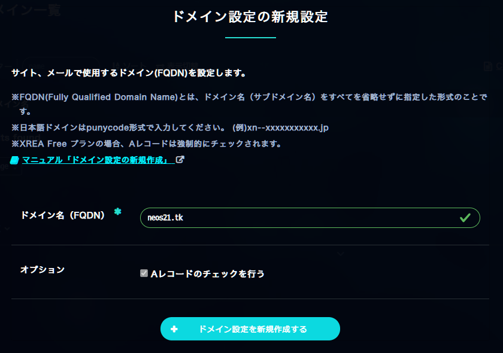
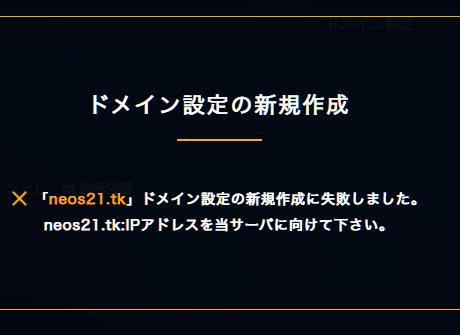
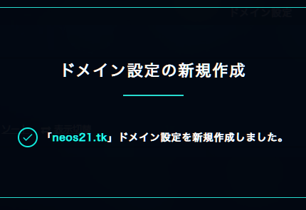
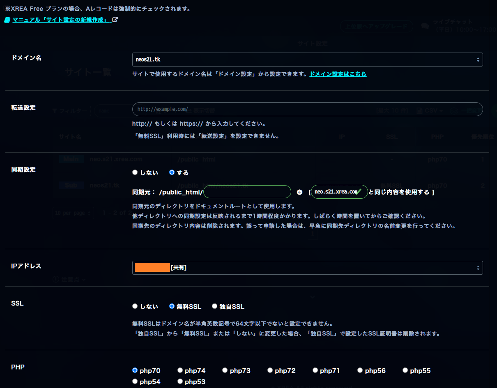
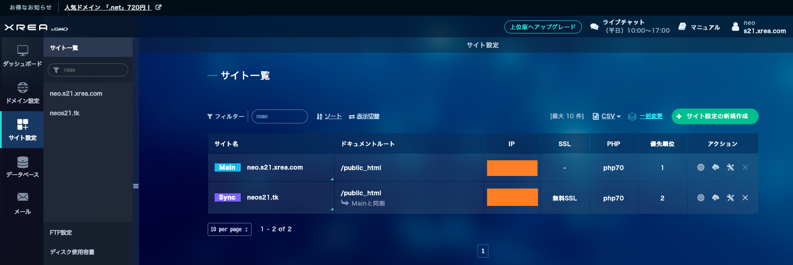

XREA の無料 SSL と Freenom 無料独自ドメインで XREA のサイトを HTTPS 化してみる
自分のメインサイト Neo's World (http://neo.s21.xrea.com/) は、XREA の無料プランで2002年から運営している。
XREA は Let's Encrypt を利用した無料 SSL を提供してくれていて、Value-Domain で取得したドメインを連携して XREA サイトを HTTPS 化して公開できたりする。
今回は Value-Domain は一切使わず、Freenom で無料独自ドメインを取得し、Freenom 側の DNS を利用して設定を行い、XREA のサイトを HTTPS 化してみる。
目次
XREA の Public IP を確認する
まずは XREA の管理画面にログインする。
「サイト設定」に移動し、「Main」サイトの「IP」欄を確認する。

Freenom で独自ドメインを取得し、DNS を設定する
Freenom で独自ドメインを取得する。
以下の記事も多少参考に。
ドメインを登録できたら、上部メニュー Services → My Domains → 登録したドメインを選択する → 「Manage Domain」 → 「Manage Freenom DNS」タブ と進み、Freenom DNS の設定画面を開く。
そしたら次のようにレコードを登録する。
| Name | Type | TTL | Target |
|---|---|---|---|
| (空白) | A | 3600 | 【XREA の Public IP】 |
| www | A | 3600 | 【XREA の Public IP】 |

XREA 側にドメインを登録する
XREA の管理画面に戻り、「ドメイン設定」に移動する。

「ドメイン設定の新規作成」ボタンを押下し、登録した Freenom ドメインを登録する。

Freenom DNS の設定が反映されるのにしばらく時間がかかるようで、登録に失敗した、といったメッセージが出る場合がある。10分くらい気長に待つ。

Freenom DNS の設定が浸透したら登録できるようになる。

無料 SSL を使用したサイト設定を追加する
XREA 管理画面の「サイト設定」より、「サイト設定の新規作成」ボタンを押下し、次にように設定していく。
- ドメイン名 : 「ドメイン設定」画面で登録したドメインを選択する
- 転送設定 : 無視
- 同期設定 : する
- 同期元 :
/public_html/(空欄) - 「(Main サイト) と同じ内容を使用する」を選択する
- 同期元 :
- IP アドレス : そのまま (Main サイトと同じ IP が
[共有]で選択されているはず) - SSL : 無料 SSL を選択する
- PHP : 適当に。
php70で良い - オプション : 「A レコードのチェックを行う」は XREA 無料プランだとチェックが付いたままなので放置

コレで登録する。次のようになれば OK。

ココまでできたら、
という HTTP でアクセスすると、HTTPS にリダイレクトされ、
でアクセスできるようになる。
www.neos21.tk といった www 付きだと「ドメインウェブの設定が見つかりません」という XREA のエラー画面に移動してしまい、www 付きでは上手く転送できていないみたい。まぁとりあえずいいや。
あと、自分のサイトだと XREA カウンタとかが HTTP リクエストで、混在コンテンツ警告により「保護されていない通信」扱いになってしまう。
など、混在コンテンツが発生しないような URL にアクセスしてみると、ちゃんと「この接続は保護されています」となるので、SSL 対応自体はちゃんとできている。
混在コンテンツをちゃんとなくさないといけないが、XREA カウンタも2002年から使っていて愛着があるし、使い続けたいなー。
とりあえずはコレで OK とする。